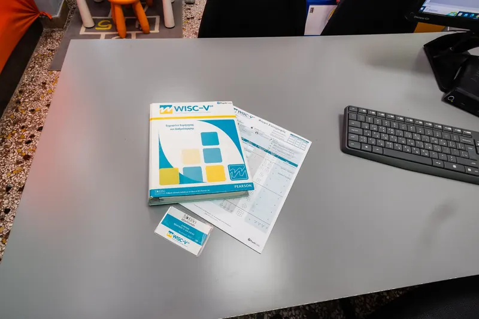
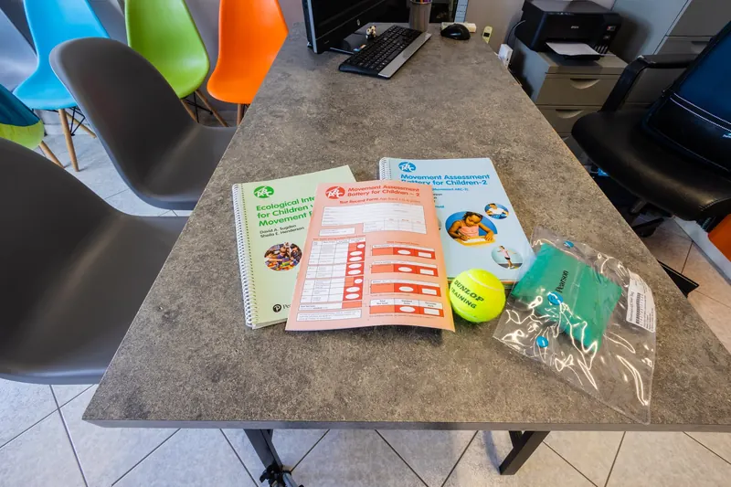

Πρώτα ακούμε εσάς.
Έπειτα γνωρίζουμε το παιδί.

Η θεραπευτική αξιολόγηση μάς βοηθά να κατανοήσουμε τις δυνατότητες του παιδιού, τις δυσκολίες που αντιμετωπίζει και όσα είναι σημαντικά για την οικογένεια.
Η πρώτη συνάντηση γίνεται μόνο με τον γονέα. Ακούμε τους προβληματισμούς σας, συζητάμε το ιστορικό και την καθημερινότητα του παιδιού και σας εξηγούμε πώς θα γίνει η αξιολόγηση.
Οι δικές σας παρατηρήσεις είναι ουσιαστικό μέρος της διαδικασίας.
Μιλήστε μαζί μαςΗ διαδικασία, βήμα βήμα
Από τη δική σας εικόνα μέχρι το πλάνο υποστήριξης.
Ακούμε εσάς
Συγκεντρώνουμε πληροφορίες για την ανάπτυξη, την καθημερινότητα και τις εμπειρίες του παιδιού.
Γνωρίζουμε το παιδί
Ακολουθεί η γνωριμία με το παιδί. Ανάλογα με την ηλικία και όσα σας απασχολούν, αξιοποιούμε παρατήρηση, δραστηριότητες και κατάλληλες δοκιμασίες για τους τομείς που χρειάζεται να διερευνήσουμε.
Σχεδιάζουμε τα επόμενα βήματα
Σας εξηγούμε τα ευρήματα: τι διευκολύνει το παιδί και πού χρειάζεται υποστήριξη, με χώρο για τις δικές σας ερωτήσεις. Με βάση αυτά και τις προτεραιότητες της οικογένειας, προτείνουμε στόχους και πρόγραμμα υποστήριξης. Οι στόχοι επανεξετάζονται στην πορεία.
Τα εργαλεία που χρησιμοποιούμε
Επιλέγουμε εργαλεία ανάλογα με την ηλικία και όσα σας απασχολούν. Χρησιμοποιούμε σταθμισμένες δοκιμασίες (συγκρίνουν το παιδί με παιδιά της ηλικίας του), ελληνικές όπου υπάρχουν, μαζί με δομημένη παρατήρηση και κλινικά εργαλεία. Τα αποτελέσματα τα ερμηνεύουμε πάντα μαζί με το ιστορικό και όσα μας λέτε εσείς.
Νοημοσύνη και γνωστικοί τομείς
- WPPSI-III (ελληνική έκδοση): για παιδιά περίπου 2,5 έως 7 ετών. Μέσα από εικόνες, κύβους και σύντομες ερωτήσεις δείχνει πώς το παιδί καταλαβαίνει τον λόγο, πώς σκέφτεται με εικόνες και σχήματα και πόσο γρήγορα δουλεύει.
- WISC-V (ελληνική έκδοση): για παιδιά και εφήβους 6 έως 16 ετών. Δίνει εικόνα για τη λεκτική κατανόηση, τη λογική σκέψη, τη μνήμη εργασίας και την ταχύτητα με την οποία το παιδί επεξεργάζεται πληροφορίες.
- WAIS-IV (ελληνική έκδοση): για εφήβους από 16 ετών και ενήλικες. Εξετάζει τους ίδιους βασικούς γνωστικούς τομείς σε μεγαλύτερες ηλικίες.
Αυτισμός
- ADOS-2: δομημένη παρατήρηση μέσα από παιχνίδι, δραστηριότητες και συζήτηση, ανάλογα με την ηλικία. Εξετάζει την επικοινωνία, την κοινωνική αλληλεπίδραση, το παιχνίδι και τα επαναλαμβανόμενα ενδιαφέροντα ή κινήσεις.
- ADI-R: αναλυτική συνέντευξη με τους γονείς για την ανάπτυξη του παιδιού από τα πρώτα του χρόνια, την επικοινωνία, τις σχέσεις και τα ενδιαφέροντά του.
- PEP-3: εξατομικευμένο ψυχοεκπαιδευτικό προφίλ, κυρίως για μικρά παιδιά. Περιγράφει δυνάμεις και ανάγκες στην επικοινωνία, στην κίνηση και στη συμπεριφορά, για να σχεδιαστεί η παρέμβαση.
- ΕΔΑΛΦΑ: Εργαλείο Διεπιστημονικής Ομάδας για την Αξιολόγηση του Επιπέδου Λειτουργικότητας Παιδιού στο Φάσμα του Αυτισμού. Περιγράφει πώς τα καταφέρνει το παιδί στην καθημερινότητα, ώστε να οργανωθεί η υποστήριξη.
Η διάγνωση τίθεται από γιατρό. Τα ευρήματά μας τη στηρίζουν και βοηθούν στον σχεδιασμό της παρέμβασης.
Εργοθεραπευτική αξιολόγηση
- Movement ABC-2: κινητική επιδεξιότητα για παιδιά 3 έως 16 ετών. Περιλαμβάνει δραστηριότητες με τα χέρια, πέταγμα και πιάσιμο μπάλας και ισορροπία.
- DTVP-3: οπτική αντίληψη και συνεργασία ματιού και χεριού, π.χ. αντιγραφή σχημάτων και εντοπισμός μορφών μέσα σε εικόνες.
- PDMS-2: αδρή και λεπτή κινητικότητα στα μικρότερα παιδιά, έως περίπου 6 ετών: στάση, μετακίνηση, πιάσιμο και χειρισμός αντικειμένων.
- Κλινικές παρατηρήσεις κατά A. J. Ayres: παρατηρούμε την κίνηση, τη στάση του σώματος και τον τρόπο που το παιδί αντιδρά σε ήχους, αγγίγματα και κίνηση.
- Bender Test: το παιδί αντιγράφει απλά σχέδια. Δείχνει πώς συνδυάζει την οπτική αντίληψη με την κίνηση του χεριού.
Λογοθεραπευτική αξιολόγηση
- ΛΟΓΟΜΕΤΡΟ: ελληνικό σταθμισμένο εργαλείο για παιδιά 4 έως 7 ετών, σε υπολογιστή με μορφή παιχνιδιού. Εξετάζει τον προφορικό λόγο και δεξιότητες που προετοιμάζουν την ανάγνωση και τη γραφή.
- Δοκιμασία Φωνητικής και Φωνολογικής Εξέλιξης (ΔΦΦΕ) του Πανελλήνιου Συλλόγου Λογοπεδικών-Λογοθεραπευτών: πώς προφέρει το παιδί τους ήχους της ελληνικής και ποια λάθη κάνει σε σχέση με την ηλικία του.
- ECOSSE: κατανόηση προτάσεων. Το παιδί ακούει μια πρόταση και διαλέγει την εικόνα που ταιριάζει.
- Εικόνες Δράσης: το παιδί περιγράφει εικόνες. Δείχνει πόση πληροφορία δίνει και πόσο σωστά χρησιμοποιεί τη γραμματική.
- Δοκιμασία Εκφραστικού Λεξιλογίου: το παιδί ονομάζει εικόνες. Δείχνει το εύρος των λέξεων που χρησιμοποιεί.
Ψυχοσυναισθηματική αξιολόγηση
- Ιστορίες της Düss: σύντομες ιστορίες που ολοκληρώνει το παιδί. Δείχνουν πώς βιώνει τις σχέσεις, τους φόβους και τις επιθυμίες του.
- CAT: για μικρότερα παιδιά. Το παιδί λέει ιστορίες για εικόνες με ζώα.
- TAT: για μεγαλύτερα παιδιά και εφήβους. Ιστορίες για εικόνες με ανθρώπους σε καθημερινές στιγμές.
- Rorschach: το παιδί ή ο έφηβος λέει τι βλέπει σε κηλίδες μελανιού. Δίνει πληροφορίες για τον τρόπο που αντιλαμβάνεται και οργανώνει τις εμπειρίες του.
Καμία από αυτές τις δοκιμασίες δεν ερμηνεύεται μόνη της.

Τι είναι χρήσιμο
να έχετε μαζί σας
Στην επικοινωνία για το ραντεβού θα συζητήσουμε τι χρειάζεται για τη δική σας περίπτωση.
- Προηγούμενες αξιολογήσεις ή γνωματεύσεις, εφόσον υπάρχουν.
- Παρατηρήσεις για την καθημερινότητα του παιδιού, στο σπίτι ή στο σχολείο.
- Οι απορίες και οι προτεραιότητές σας.
Πριν από την πρώτη συνάντηση
Μερικές πρακτικές απαντήσεις για να οργανώσετε το πρώτο βήμα.
Χρειάζεται να ξέρω ποια ειδικότητα να επιλέξω;
Όχι. Μπορείτε να ξεκινήσετε περιγράφοντας όσα παρατηρείτε και όσα σας απασχολούν. Θα συζητήσουμε μαζί σας ποιο είναι το κατάλληλο επόμενο βήμα.
Τι να περιμένω σε χρόνο και κόστος;
Η πρώτη συνάντηση με τον γονέα διαρκεί περίπου 30 έως 45 λεπτά. Η αξιολόγηση του παιδιού γίνεται σε μία ή περισσότερες συναντήσεις, ανάλογα με την ηλικία του και τις ειδικότητες που χρειάζεται να συμμετέχουν. Το κόστος εξαρτάται από τον αριθμό των ειδικοτήτων. Σας το λέμε συγκεκριμένα στο τηλέφωνο, πριν κλείσετε ραντεβού, ώστε να μην υπάρχουν εκπλήξεις.
Χρειάζομαι γνωμάτευση για να αποζημιωθώ από το ταμείο μου;
Ναι. Η θεραπευτική αξιολόγηση που κάνουμε εμείς δεν είναι ιατρική γνωμάτευση, ούτε αντικαθιστά την αξιολόγηση του ΚΕΔΑΣΥ, της δημόσιας υπηρεσίας που αξιολογεί για το σχολείο. Για να αποζημιωθείτε από το ταμείο σας (π.χ. ΕΟΠΥΥ) χρειάζεται ηλεκτρονική γνωμάτευση από γιατρό κατάλληλης ειδικότητας, όπως παιδοψυχίατρο, αναπτυξιολόγο παιδίατρο ή παιδονευρολόγο, σε δημόσιο νοσοκομείο ή ιδιωτικά. Αν την έχετε ήδη, φέρτε τη μαζί σας. Αν όχι, στην πρώτη συνάντηση σας εξηγούμε τη διαδρομή και σας κατευθύνουμε πού να απευθυνθείτε.
Ας συζητήσουμε το πρώτο βήμα
Πείτε μας τι σας απασχολεί, για να οργανώσουμε την πρώτη συνάντηση.